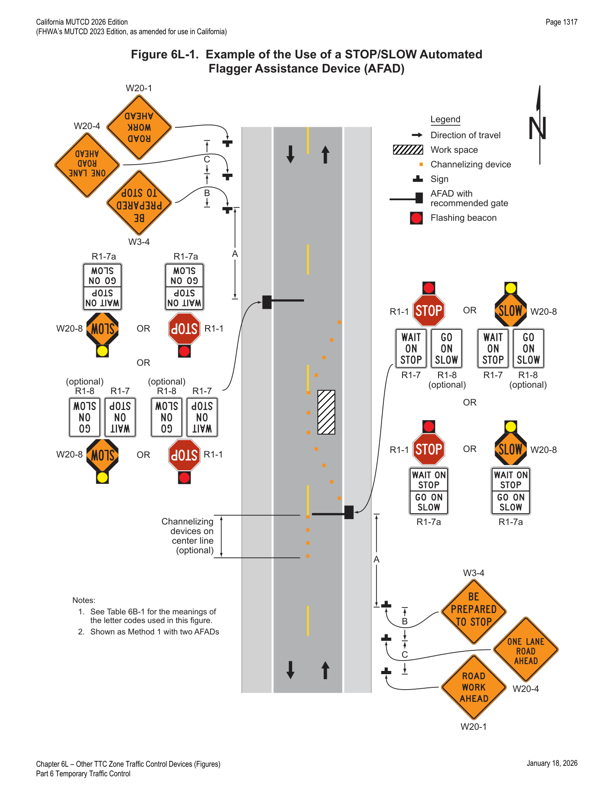
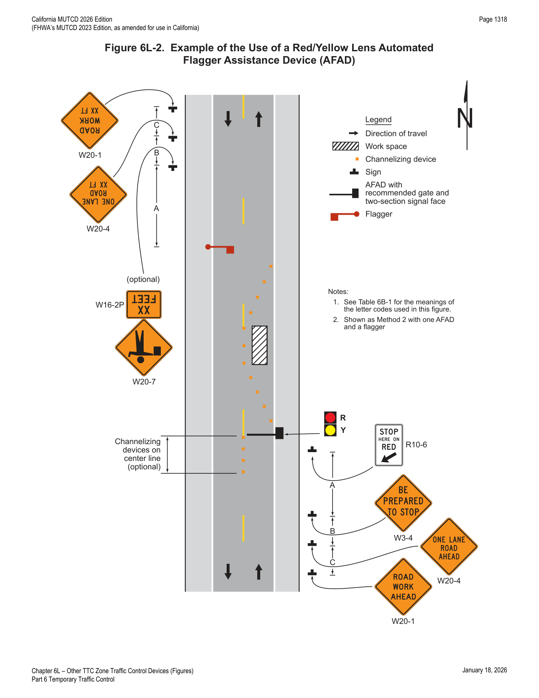
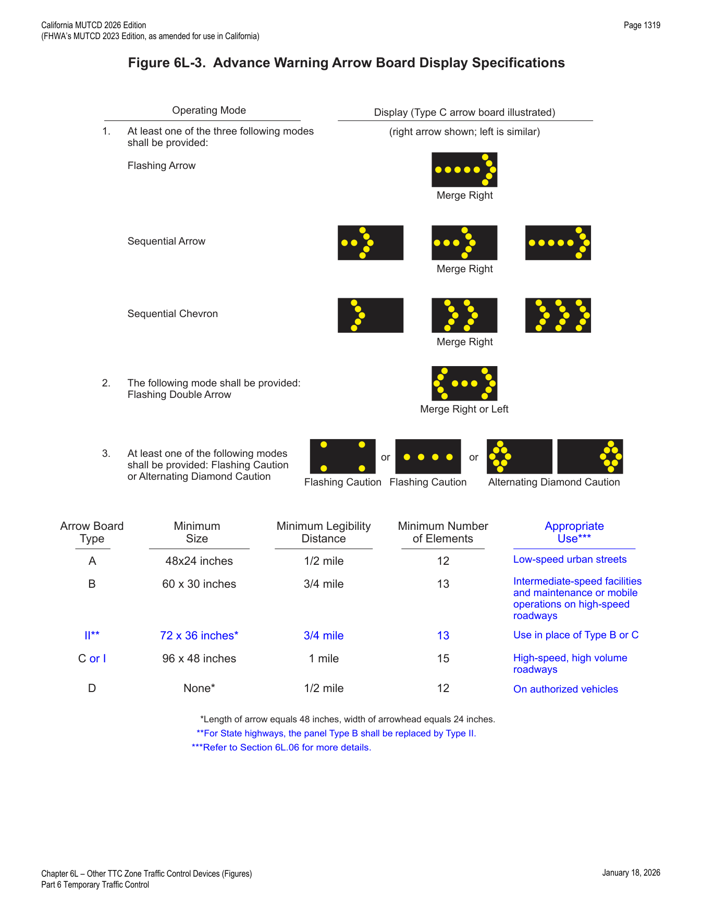
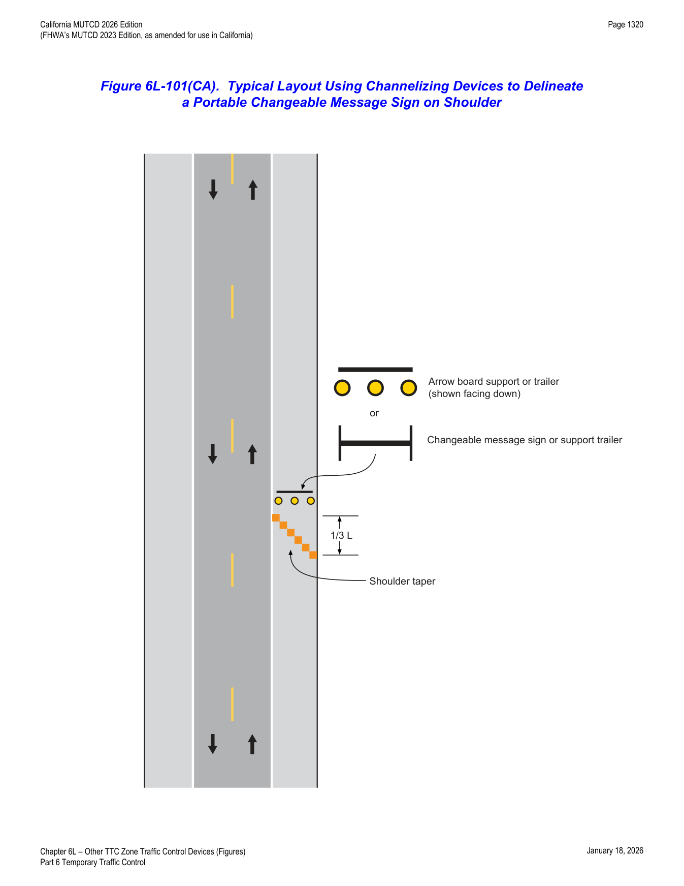

Part 6 · Temporary Traffic Control · Chapter 6L
Other TTC Zone Traffic Control Devices
The active, powered devices of the TTC toolkit: temporary traffic control signals, Automated Flagger Assistance Devices (AFADs), portable changeable message signs, arrow boards, flashing beacons and warning lights, and high-level warning devices (flag trees).
6L.01Temporary Traffic Control Signals
- 01Temporary traffic control signals (see Section 4D.11) used to control road user movements through TTC zones and in other TTC situations shall comply with the applicable provisions of Part 4 and, for State highways, Caltrans' Standard Plans and/or Special Provisions. See Section 1A.05 for information regarding this publication.
- 02Temporary traffic control signals are typically used in TTC zones such as temporary haul road crossings; temporary one-way operations along a one-lane, two-way highway; temporary one-way operations on bridges, reversible lanes, and intersections.
- 03A temporary traffic control signal that is used to control traffic through a one-lane, two-way section of roadway shall comply with the provisions of Section 4O.02.
- 04When temporary traffic control signals are used, conflict monitors typical of traditional traffic control signal operations should be used.
- 05Where pedestrians are detoured to a temporary traffic control signal, an accessible pedestrian signal (see Chapter 4K) provides information in non-visual formats (such as audible tones and/or speech messages, and vibrating surfaces) so that a pedestrian with vision disabilities can know when to cross the street along the alternate route.
- 06Temporary traffic control signals may be portable or temporarily mounted on fixed supports.
- 07Temporary traffic control signals should only be used in situations where temporary traffic control signals are preferable to other means of traffic control, such as changing the work staging or work zone size to eliminate one-way vehicular traffic movements, using flaggers to control one-way or crossing movements, using STOP or YIELD signs, and using warning devices alone.
- 08Factors related to the design and application of temporary traffic control signals include the following: (A) safety and road user needs; (B) work staging and operations; (C) the feasibility of using other TTC strategies (for example, flaggers, providing space for two lanes, or detouring road users, including bicyclists and pedestrians); (D) sight distance restrictions; (E) human factors considerations (for example, lack of driver familiarity with temporary traffic control signals); (F) road-user volumes including roadway and intersection capacity; (G) affected side streets and driveways; (H) vehicle speeds; (I) the placement of other TTC devices; (J) parking; (K) turning restrictions; (L) pedestrians; (M) the nature of adjacent land uses (such as residential or commercial); (N) legal authority; (O) signal phasing and timing requirements; (P) full-time or part-time operation; (Q) actuated, fixed-time, or manual operation; (R) power failures or other emergencies; (S) inspection and maintenance needs; (T) need for detailed placement, timing, and operation records; and (U) operation by contractors or by others.
- 09Although temporary traffic control signals can be mounted on trailers or lightweight portable supports, fixed supports offer superior resistance to displacement or damage by severe weather, vehicle impact, and vandalism.
- 10Other TTC devices should be used to supplement temporary traffic control signals, including warning and regulatory signs, pavement markings, and channelizing devices.
- 11Temporary traffic control signals not in use should be covered or removed.
- 12If a temporary traffic control signal is located within ½ mile of an adjacent traffic control signal, consideration should be given to interconnected operation.
- 13Temporary traffic control signals shall not be located within 200 feet of a grade crossing unless the temporary traffic control signal is provided with preemption in accordance with Sections 4F.18, 4F.19, and 8D.09, or unless a uniformed officer or flagger is provided at the crossing to prevent vehicles from stopping within the crossing.
6L.02Automated Flagger Assistance Devices — General
- 01Automated Flagger Assistance Devices (AFADs) enable a flagger(s) to be positioned out of the lane of traffic and are used to control road users through TTC zones. These devices are designed to be remotely operated either by a single flagger at one end of the TTC zone or at a central location, or by separate flaggers near each device's location.
- 02There are two types of AFADs: (A) an AFAD (see Section 6L.03) that uses a remotely controlled STOP/SLOW sign on either a trailer or a movable cart system to alternately control right-of-way, and (B) an AFAD (see Section 6L.04) that uses remotely controlled red and yellow lenses and a gate arm to alternately control right-of-way.
- 03AFADs might be appropriate for short-term and intermediate-term activities (see Section 6N.01). Typical applications include TTC activities such as, but not limited to: (A) bridge maintenance, (B) haul road crossings, and (C) pavement patching.
- 04AFADs shall only be used in situations where there is only one lane of approaching traffic in the direction to be controlled.
- 05When used at night, the AFAD location shall be illuminated in accordance with Section 6D.06.
- 06AFADs should not be used for long-term stationary work (see Section 6N.01).
- 07Because AFADs are not traffic control signals, they shall not be used as a substitute for or a replacement for a continuously operating temporary traffic control signal as described in Section 6L.01.
- 08AFADs shall meet the crashworthy (see definition in Section 1C.02) performance criteria contained in Section 6A.04.
- 09If used, AFADs should be located in advance of one-lane, two-way tapers and downstream from the point where approaching traffic is to stop in response to the device.
- 10If used, AFADs shall be placed so that all of the signs and other items controlling traffic movement are readily visible to the driver of the initial approaching vehicle with advance warning signs alerting other approaching traffic to be prepared to stop.
- 11If used, an AFAD shall be operated only by a flagger (see Section 6D.01) who has been trained on the operation of the AFAD. The flagger(s) operating the AFAD(s) shall not leave the AFAD(s) unattended at any time while the AFAD(s) is being used.
- 12The use of AFADs shall conform to one of the following methods: (A) an AFAD at each end of the TTC zone (Method 1), or (B) an AFAD at one end of the TTC zone and a flagger at the opposite end (Method 2).
- 13Except as provided in Paragraph 14 of this Section, two flaggers shall be used when using either Method 1 or Method 2.
- 14A single flagger may simultaneously operate two AFADs (Method 1) or may operate a single AFAD on one end of the TTC zone while being the flagger at the opposite end of the TTC zone (Method 2) if both of the following conditions are present: (A) the flagger has an unobstructed view of the AFAD(s), and (B) the flagger has an unobstructed view of approaching traffic in both directions.
- 15When an AFAD is used, the advance warning signing should include a ROAD WORK AHEAD (W20-1) sign, a ONE LANE ROAD (W20-4) sign, and a BE PREPARED TO STOP (W3-4) sign.
- 16When the AFAD is not in use, the signs associated with the AFAD, both at the AFAD location and in advance, shall be removed or covered.
- 17A State or local agency that elects to use AFADs should adopt a policy, based on engineering judgment, governing AFAD applications. The policy should also consider more detailed and/or more restrictive requirements for AFAD use, such as: (A) conditions applicable for the use of Method 1 and Method 2 AFAD operation, (B) volume criteria, (C) maximum distance between AFADs, (D) conflicting lenses/indications monitoring requirements, (E) fail-safe procedures, (F) additional signing and pavement markings, (G) application consistency, (H) larger signs or lenses to increase visibility, and (I) use of backplates.
In practice, the AFAD's core value proposition is getting the flagger's body out of the traffic lane — but paragraph 07 is a hard line: an AFAD is not a substitute for a continuously operating temporary traffic control signal, and it may never be used except with only one approaching lane in the controlled direction.
6L.03STOP/SLOW Automated Flagger Assistance Devices
- 01A STOP/SLOW Automated Flagger Assistance Device (AFAD) shall include a STOP/SLOW sign that alternately displays the STOP (R1-1) face and the SLOW (W20-8) face of a STOP/SLOW paddle (see Figure 6L-1).
- 02The AFAD's STOP/SLOW sign shall have an octagonal shape, shall be fabricated of rigid material, and shall be mounted with the bottom of the sign a minimum of 6 feet above the pavement on an appropriate support. The size of the STOP/SLOW sign shall be at least 24 x 24 inches with letters at least 8 inches high. The background of the STOP face shall be red with white letters and border. The background of the SLOW face shall be diamond-shaped and orange with black letters and border. Both faces of the STOP/SLOW sign shall be retroreflectorized.
- 03The AFAD's STOP/SLOW sign shall have a means to positively lock, engage, or otherwise maintain the sign assembly in a stable condition when set in the STOP or SLOW position.
- 04The AFAD's STOP/SLOW sign shall be supplemented with active conspicuity devices by incorporating either: (A) white or red flashing lights within the STOP face and white or yellow flashing lights within the SLOW face meeting the provisions contained in Section 6D.02; or (B) a Stop Beacon (see Section 4S.05) mounted a maximum of 24 inches above the STOP face and a Warning Beacon (see Section 4S.03) mounted a maximum of 24 inches above, below, or to the side of the SLOW face. The Stop Beacon shall not be flashed or illuminated when the SLOW face is displayed, and the Warning Beacon shall not be flashed or illuminated when the STOP face is displayed. Except for the mounting locations, the beacons shall comply with the provisions of Chapter 4S.
- 05Type B warning light(s) (see Section 6L.07) or strobe lights may be used in lieu of the Warning Beacon during the display of the SLOW face of the AFAD's STOP/SLOW sign.
- 06If Type B warning lights or strobe lights are used in lieu of a Warning Beacon, they shall flash continuously when the SLOW face is displayed and shall not be flashed or illuminated when the STOP face is displayed.
- 07The faces of the AFAD's STOP/SLOW sign may include louvers to improve the stability of the device in windy or other adverse environmental conditions.
- 08If louvers are used, the louvers shall be designed such that the full sign face is visible to approaching traffic at a distance of 50 feet or greater.
- 09The STOP/SLOW AFAD should include a gate arm that descends to a down position across the approach lane of traffic when the STOP face is displayed and then ascends to an upright position when the SLOW face is displayed.
- 10In lieu of a stationary STOP/SLOW sign with a separate gate arm, the STOP/SLOW sign may be attached to a mast arm that physically blocks the approach lane of traffic when the STOP face is displayed and then moves to a position that does not block the approach lane when the SLOW face is displayed.
- 11Gate arms, if used, shall be fully retroreflectorized on both sides, and shall have vertical alternating red and white stripes at 16-inch intervals measured horizontally as shown in Figure 8D-1. When the arm is in the down position blocking the approach lane: (A) the minimum vertical aspect of the arm and sheeting shall be 2 inches, and (B) the end of the arm shall reach at least to the center of the lane being controlled.
- 12A WAIT ON STOP (R1-7) sign (see Figure 6L-1) shall be displayed to road users approaching the AFAD.
- 15The GO ON SLOW sign, if used, and the WAIT ON STOP sign shall be positioned on the same support structure as the AFAD or immediately adjacent to the AFAD such that they are in the same direct line of view of approaching traffic as the sign faces of the AFAD.
- 16To inform road users to stop, the AFAD shall display the STOP face and the red or white lights, if used, within the STOP face shall flash or the Stop Beacon shall flash. To inform road users to proceed, the AFAD shall display the SLOW face and the yellow or white lights, if used, within the SLOW face shall flash or the Warning Beacon or the Type B warning lights shall flash.
- 17If STOP/SLOW AFADs are used to control traffic in a one-lane, two-way TTC zone, safeguards shall be incorporated to prevent the flagger(s) from simultaneously displaying the SLOW face at each end of the TTC zone. Additionally, the flagger(s) shall not display the AFAD's SLOW face until all oncoming vehicles have cleared the one-lane portion of the TTC zone.

6L.04Red/Yellow Lens Automated Flagger Assistance Devices
- 01A Red/Yellow Lens Automated Flagger Assistance Device (AFAD) shall alternately display a steadily illuminated CIRCULAR RED lens and a flashing CIRCULAR YELLOW lens to control traffic without the need for a flagger in the immediate vicinity of the AFAD or on the roadway (see Figure 6L-2).
- 02Red/Yellow Lens AFADs shall have at least one set of CIRCULAR RED and CIRCULAR YELLOW lenses that are 12 inches in diameter. Unless otherwise provided in this Section, the lenses and their arrangement, CIRCULAR RED on top and CIRCULAR YELLOW below, shall comply with the applicable provisions for traffic signal indications in Part 4. If the set of lenses is post-mounted, the bottom of the housing (including brackets) shall be at least 7 feet above the pavement. If the set of lenses is located over any portion of the highway that can be used by motor vehicles, the bottom of the housing (including brackets) shall be at least 15 feet above the pavement.
- 03Additional sets of CIRCULAR RED and CIRCULAR YELLOW lenses, located over the roadway or on the left-hand side of the approach and operated in unison with the primary set, may be used to improve visibility and/or conspicuity of the AFAD.
- 04A Red/Yellow Lens AFAD shall include a gate arm that descends to a down position across the approach lane of traffic when the steady CIRCULAR RED lens is illuminated and then ascends to an upright position when the flashing CIRCULAR YELLOW lens is illuminated. The gate arm shall be fully retroreflectorized on both sides, and shall have vertical alternating red and white stripes at 16-inch intervals measured horizontally as shown in Figure 8D-1. When the arm is in the down position blocking the approach lane: (A) the minimum vertical aspect of the arm and sheeting shall be 2 inches, and (B) the end of the arm shall reach at least to the center of the lane being controlled.
- 05A Stop Here On Red (R10-6 or R10-6a) sign (see Section 2B.59) shall be installed on the right-hand side of the approach at the point at which drivers are expected to stop when the steady CIRCULAR RED lens is illuminated (see Figure 6L-2).
- 06To inform road users to stop, the AFAD shall display a steadily illuminated CIRCULAR RED lens and the gate arm shall be in the down position. To inform road users to proceed, the AFAD shall display a flashing CIRCULAR YELLOW lens and the gate arm shall be in the upright position.
- 07If Red/Yellow Lens AFADs are used to control traffic in a one-lane, two-way TTC zone, safeguards shall be incorporated to prevent the flagger(s) from actuating a simultaneous display of a flashing CIRCULAR YELLOW lens at each end of the TTC zone. Additionally, the flagger shall not actuate the AFAD's display of the flashing CIRCULAR YELLOW lens until all oncoming vehicles have cleared the one-lane portion of the TTC zone.
- 08A change interval shall be provided as the transition between the display of the flashing CIRCULAR YELLOW indication and the display of the steady CIRCULAR RED indication. During the change interval, the CIRCULAR YELLOW lens shall be steadily illuminated. The gate arm shall remain in the upright position during the display of the steadily illuminated CIRCULAR YELLOW change interval.
- 09A change interval shall not be provided between the display of the steady CIRCULAR RED indication and the display of the flashing CIRCULAR YELLOW indication.
- 10The steadily illuminated CIRCULAR YELLOW change interval should have a duration of at least 5 seconds, unless a different duration, within the range of durations recommended by Section 4F.17, is justified by engineering judgment.

In practice, the two AFAD types differ in their "go" signal semantics: STOP/SLOW AFADs display an actual SLOW paddle face, while Red/Yellow Lens AFADs use a flashing yellow (never a green) to tell drivers to proceed cautiously — there is no green indication in either AFAD type, reinforcing to drivers that this is not a normal traffic signal.
6L.05Portable Changeable Message Signs
- 01Portable changeable message signs (PCMS) are TTC devices installed for temporary use with the flexibility to display a variety of messages. In most cases, portable changeable message signs follow the same provisions for design and application as those given for changeable message signs in Chapter 2L. The information in this Section describes situations where the provisions for portable changeable message signs differ from those given in Chapter 2L.
- 02Portable changeable message signs are used most frequently on high-density urban freeways, but have applications on all types of highways where highway alignment, road user routing problems, or other pertinent conditions require advance warning and information.
- 03Portable changeable message signs have a wide variety of applications in TTC zones including: roadway, lane, or ramp closures; incident management; width restriction information; speed control or reductions; advisories on work scheduling; road user management and diversion; warning of adverse conditions or special events; and other operational control.
- 04The primary purpose of portable changeable message signs in TTC zones is to advise the road user of unexpected situations. Portable changeable message signs are particularly useful as they are capable of: (A) conveying complex messages, (B) displaying real time information about conditions ahead, and (C) providing information to assist road users in making decisions prior to the point where actions must be taken.
- 05Some typical applications include the following: (D) where the speed of vehicular traffic is expected to drop substantially; (E) where significant queuing and delays are expected; (F) where adverse environmental conditions are present; (G) where there are changes in alignment or surface conditions; (H) where advance notice of ramp, lane, or roadway closures is needed; (I) where crash or incident management is needed; and/or (J) where changes in the road user pattern occur.
- 06The components of a portable changeable message sign should include: a message sign, control systems, a power source, and mounting and transporting equipment. The front face of the sign should be covered with a protective material.
- 07Portable changeable message signs shall comply with the applicable design and application principles established in Chapter 2A. Portable changeable message signs shall display only traffic operational, regulatory, warning, and guidance information, and shall not be used for advertising messages.
- 08Section 2L.02 contains information regarding overly simplistic or vague messages that is also applicable to portable changeable message signs.
- 09The colors used for legends on portable changeable message signs shall comply with those shown in Table 2A-2.
- 09aRefer to FHWA's List of Known Errors for an error in Paragraph 9 text (referencing Table 2A-5 instead of 2A-2). Refer to Section 1A.04 for more details.
- 10Section 2L.04 contains information regarding the luminance, luminance contrast, and contrast orientation that is also applicable to portable changeable message signs.
- 11Portable changeable message signs should be visible from ½ mile under both day and night conditions.
- 12Section 2B.21 contains information regarding the design of portable changeable message signs that are used to display speed limits that change based on operational conditions, or are used to display the speed at which approaching drivers are traveling.
- 13A portable changeable message sign should be limited to three lines of eight characters per line or should consist of a full matrix display.
- 14Except as provided in Paragraph 15 of this Section, the letter height used for portable changeable message sign messages should be a minimum of 18 inches.
- 15For portable changeable message signs mounted on service patrol trucks or other incident response vehicles, a letter height as short as 10 inches may be used. Shorter letter sizes may also be used on a portable changeable message sign used on low speed facilities provided that the message is legible from at least 650 feet.
- 16The portable changeable message sign may vary in size.
- 17Messages on a portable changeable message sign should consist of no more than two phases, and a phase should consist of no more than three lines of text. Each phase should be capable of being understood by itself, regardless of the order in which it is read. Messages should be centered within each line of legend. If more than one portable changeable message sign is simultaneously legible to road users, then only one of the signs should display a sequential message at any given time.
- 18Road users have difficulties in reading messages displayed in more than two phases on a typical three-line portable changeable message sign.
- 19Except when being used to simulate an Arrow Board display (see Section 6L.06), techniques of message display such as animation, rapid flashing, dissolving, exploding, scrolling, traveling horizontally or vertically across the face of the sign, or other dynamic elements shall not be used.
- 20When a message is divided into two phases, the display time for each phase should be at least 2 seconds, and the sum of the display times for both of the phases should be a maximum of 8 seconds.
- 21All messages should be designed with consideration given to the principles provided in this Section and also taking into account the following: (A) the message should be as brief as possible and should contain three thoughts (with each thought preferably shown on its own line) that convey: (1) the problem or situation that the road user will encounter ahead, (2) the location of or distance to the problem or situation, and (3) the recommended driver action. (B) If more than two phases are needed to display a message, additional portable changeable message signs should be used. When multiple portable changeable message signs are needed, they should be placed on the same side of the roadway and they should be separated from each other by a distance of at least 1,000 feet on freeways and expressways, and by a distance of at least 500 feet on other types of highways.
- 22When the word messages shown in Tables 1D-1 or 1D-2 need to be abbreviated on a portable changeable message sign, the provisions described in Section 1D.08 shall be followed.
- 23In order to maintain legibility, portable changeable message signs shall automatically adjust their brightness under varying light conditions.
- 24The control system shall include a display screen upon which messages can be reviewed before being displayed on the message sign. The control system shall be capable of maintaining memory when power is unavailable.
- 25Portable changeable message signs shall be equipped with a power source and a battery back-up to provide continuous operation when failure of the primary power source occurs.
- 26The mounting of portable changeable message signs on a trailer, a large truck, or a service patrol truck shall be such that the bottom of the message sign shall be a minimum of 7 feet above the roadway in urban areas and 5 feet above the roadway in rural areas when it is in the operating mode.
- 27Portable changeable message signs should be used as a supplement to and not as a substitute for conventional signs and pavement markings.
- 28When portable changeable message signs are used for route diversion, they should be placed far enough in advance of the diversion to allow road users ample opportunity to perform necessary lane changes, to adjust their speed, or to exit the affected highway.
- 29Portable changeable message signs should be sited and aligned to provide maximum legibility and to allow time for road users to respond appropriately to the portable changeable message sign message.
- 30Portable changeable message signs should be placed off the shoulder of the roadway and behind a traffic barrier, if practicable. Where a traffic barrier is not available to shield the portable changeable message sign, it should be placed off the shoulder and outside of the clear zone. If a portable changeable message sign has to be placed on the shoulder of the roadway or within the clear zone, it should be delineated with retroreflective TTC devices. When used, advanced warning delineation is not needed if the portable changeable message sign is behind a barrier, more than 2 feet behind the curb, or 15 feet or more from the edge of the traveled way (refer to Section 6B.04). If the portable changeable message sign is placed on shoulder or partially blocking the shoulder (including overhangs), the shoulder should be closed off by a taper of channelizing devices with a length of 1/3 L using the formulas in Tables 6B-3, 6B-3(CA) and 6B-4 (refer to Section 6B.08). Refer to Figure 6L-101(CA) for a typical layout using channelizing devices to delineate a portable changeable message sign on shoulder.
- 30aFor incident management before additional resources are available or for short duration use (refer to Section 6N.01), or when the portable changeable message sign is placed well beyond the shoulder but partially within 15 feet from the edge of the traveled way, it may be delineated with a minimum of a 30-foot taper formed by three traffic cones.
- 31When portable changeable message signs are used in TTC zones, they should display only TTC messages.
- 32When portable changeable message signs are not being used to display TTC messages, they should be relocated such that they are outside of the clear zone or shielded behind a traffic barrier and turned away from traffic. If relocation or shielding is impracticable, they should be delineated with retroreflective TTC devices. If the portable changeable message sign is stored within a shoulder or partially blocking a shoulder, the shoulder should be closed according to Section 6N.06. If the portable changeable message sign is stored well beyond the shoulder but within the clear zone, it should be delineated by a taper of channelizing devices with a length of 1/3 L using the formulas in Tables 6B-3, 6B-3(CA) and 6B-4 (see Section 6B.08). Clear zone is defined by AASHTO's "Roadside Design Guide" (refer to Section 1A.05). Refer to Figure 6L-101(CA) for a typical layout using channelizing devices to delineate a portable changeable message sign on a shoulder.
- 33Portable changeable message sign trailers should be delineated on a permanent basis by affixing retroreflective material, known as conspicuity material, in a continuous line on the face of the trailer as seen by oncoming road users.
- 34On State highways, the message displayed on Portable Changeable Message signs shall be visible from a distance of ½ mile and shall be legible from a distance of 750 feet, at noon on a cloudless day, by persons with vision of or corrected to 20/20.
- 35On local roads, the message displayed on Portable Changeable Message signs should be visible from a distance of ½ mile and should be legible from a distance of 750 feet, at noon on a cloudless day, by persons with vision of or corrected to 20/20.
- 36Refer to Caltrans' Standard Specifications Section 12-3.32 for visibility criteria cited. Refer to Section 1A.05 for information regarding this publication.
- 37Refer to Section 2B.21 for Vehicle Speed Feedback Signs.
- 38Refer to Caltrans' Changeable Message Sign (CMS) Guidelines for additional information on PCMS. Refer to Section 1A.05 for information regarding this publication.
In practice, the "three thoughts, one phase" message design principle (problem/location/action) plus the two-phase, 8-second total display cap is what keeps a PCMS message readable at highway closing speed — cramming a third phase in routinely fails driver comprehension studies cited in the Support notes.
6L.06Arrow Boards
- 01An arrow board shall be a sign with a matrix of elements capable of either flashing or sequential displays. This sign shall provide additional warning and directional information to assist in merging and controlling road users through or around a TTC zone.
- 02An arrow board in the arrow or chevron mode should be used to advise approaching traffic of a lane closure along major multi-lane roadways in situations involving heavy traffic volumes, high speeds, and/or limited sight distances, or at other locations and under other conditions where road users are less likely to expect such lane closures.
- 03If used, an arrow board should be used in combination with appropriate signs, channelizing devices, or other TTC devices.
- 04An arrow board should be placed on the shoulder of the roadway or, if practicable, farther from the traveled lane. It should be delineated with retroreflective TTC devices. When an arrow board is not being used, it should be removed; if not removed, it should be shielded; or if the previous two options are not feasible, it should be delineated with retroreflective TTC devices.
- 04aIf the arrow board is stored within a shoulder or partially blocking a shoulder, the shoulder should be closed according to Section 6G.07. If the arrow board is stored well beyond the shoulder but within the clear zone, it should be delineated by a taper of channelizing devices with a length of 1/3 L using the formulas in Tables 6B-3, 6B-3(CA) and 6B-4 (refer to Section 6B.08). Clear zone is defined by AASHTO's "Roadside Design Guide" (refer to Section 1A.05). Refer to Figure 6L-101(CA) for a typical layout using channelizing devices to delineate an arrow board on a shoulder.
- 05Arrow boards shall meet the minimum size, legibility distance, number of elements, and other specifications shown in Figure 6L-3.
- 06Type A arrow boards are appropriate for use on low-speed urban streets. Type B or II arrow boards are appropriate for intermediate-speed facilities and for maintenance or mobile operations on high-speed roadways. Type C or I arrow boards are intended to be used on high-speed, high-volume motor vehicle traffic control projects. Type D arrow boards are intended for use on vehicles authorized by the State or local agency.
- 07Type A, B or II, and C or I arrow boards shall have solid rectangular appearances. A Type D arrow board shall conform to the shape of the arrow.
- 08All arrow boards shall be finished in non-reflective black. The arrow board shall be mounted on a vehicle, a trailer, or other suitable support.
- 09The minimum mounting height, measured vertically from the bottom of the board to the roadway below it or to the elevation of the near edge of the roadway, of an arrow board should be 7 feet, except on vehicle-mounted arrow boards, which should be as high as practicable.
- 10A vehicle-mounted arrow board should be provided with remote controls.
- 11Arrow board elements shall be capable of at least a 50 percent dimming from full brilliance. The dimmed mode shall be used for nighttime operation of arrow boards.
- 12Full brilliance should be used for daytime operation of arrow boards.
- 13The arrow board shall have suitable elements capable of the various operating modes. The color presented by the elements shall be yellow.
- 14If an arrow board consisting of a bulb matrix is used, the elements should be recess-mounted or equipped with an upper hood of not less than 180 degrees.
- 15The minimum element on-time shall be 50 percent for the flashing mode, with equal intervals of 25 percent for each sequential phase. The flashing rate shall be not less than 25 or more than 40 flashes per minute.
- 16An arrow board shall have the following three mode selections: (A) a Flashing Arrow, Sequential Arrow, or Sequential Chevron mode; (B) a flashing Double Arrow mode; and (C) a flashing Caution or Alternating Diamond mode.
- 17An arrow board in the arrow or chevron mode shall be used only for stationary or moving lane closures on multi-lane roadways.
- 18For shoulder work, for blocking the shoulder, for roadside work near the shoulder, or for temporarily closing one lane on a two-lane, two-way roadway, an arrow board shall be used only in the caution mode.
- 19For a stationary lane closure, the arrow board should be located on the shoulder at the beginning of the merging taper.
- 20Where the shoulder is narrow, the arrow board should be located in the closed lane.
- 20aThe arrow board shall be located behind channelizing devices used to transition traffic from the closed lane.
- 20bCaltrans' Standard Specifications for flashing arrow boards are in Section 12-3.30. Refer to Section 1A.05 for information regarding this publication.
- 21When arrow boards are used to close multiple lanes, a separate arrow board shall be used for each closed lane.
- 22When arrow boards are used to close multiple lanes, if the first arrow board is placed on the shoulder, the second arrow board should be placed in the first closed lane at the upstream end of the second merging taper (see Figure 6P-37). When the first arrow board is placed in the first closed lane, the second arrow board should be placed in the second closed lane at the downstream end of the second merging taper.
- 23For mobile operations where a lane is closed, the arrow board should be located to provide adequate separation from the work operation to allow for appropriate reaction by approaching drivers.
- 24A vehicle displaying an arrow board shall be equipped with high-intensity rotating, flashing, oscillating, or strobe lights.
- 25Arrow boards shall only be used to indicate a lane closure. Arrow boards shall not be used to indicate a lane shift.
- 26A portable changeable message sign may be used to simulate an arrow board display.
- 27The minimum legibility distance is the distance at which flashing arrow boards shall be legible at noon on a cloudless day and at night by persons with vision of or corrected to 20/20.
- 28The minimum legibility distance for each arrow board type is shown in Figure 6L-3.
- 29Refer to Caltrans' Standard Specifications Section 12-3.30 for visibility criteria cited. Refer to Section 1A.05 for information regarding this publication.

| Arrow Board Type | Minimum Size | Minimum Legibility Distance | Minimum Number of Elements | Appropriate Use |
|---|---|---|---|---|
| A | 48 x 24 inches | 1/2 mile | 12 | Low-speed urban streets |
| B | 60 x 30 inches | 3/4 mile | 13 | Intermediate-speed facilities and maintenance or mobile operations on high-speed roadways |
| II (State highways: replaces Type B) | 72 x 36 inches* | 3/4 mile | 13 | Use in place of Type B or C |
| C or I | 96 x 48 inches | 1 mile | 15 | High-speed, high volume roadways |
| D | None* | 1/2 mile | 12 | On authorized vehicles |
* Length of arrow equals 48 inches, width of arrowhead equals 24 inches. For State highways, panel Type B shall be replaced by Type II.
In practice, the "caution mode only" rule (Paragraph 18) is the one most often missed on smaller shoulder jobs: any time an arrow board is used for shoulder work, blocking a shoulder, roadside work near the shoulder, or a single-lane closure on a two-lane, two-way road, only the flashing caution/alternating diamond display is allowed — the arrow/chevron modes are reserved strictly for actual lane closures on multi-lane roads.
6L.07Flashing Beacons and Warning Lights
- 01Lighting devices should be provided in TTC zones based on engineering judgment.
- 02Flashing beacons (see Chapter 4S) and/or warning lights may be used to supplement retroreflectorized signs, barriers, and channelizing devices.
- 03Type A, Type B, Type C, and Type D 360-degree warning lights are portable, powered, yellow, lens-directed, enclosed lights.
- 04Warning lights shall comply with the provisions in Chapter 13 of the publication entitled, "Equipment and Materials Standards of the Institute of Transportation Engineers," 1998, Institute of Transportation Engineers.
- 05When warning lights are used, they shall be mounted on signs or channelizing devices in a manner that, if hit by an errant vehicle, they will not be likely to penetrate the windshield.
- 06The maximum spacing for warning lights should be identical to the channelizing device spacing requirements.
- 07The light weight and portability of warning lights are advantages that make these devices useful as supplements to the retroreflectorization on signs and channelizing devices. The flashing lights are effective in attracting road users' attention.
- 08Warning lights may be used in either a steady-burn or flashing mode.
- 09Warning lights shall flash when placed on channelizing devices used alone or in a cluster to warn of a condition.
- 10Except for the sequential flashing warning lights discussed in Paragraph 12 of this Section, warning lights placed on channelizing devices used in a series to channelize road users shall be steady-burn.
- 11Except for the sequential flashing warning lights that are described in Paragraph 12 of this Section, flashing warning lights shall not be used for delineation, as a series of flashers fails to identify the desired vehicle path.
- 12If a series of sequential flashing warning lights is used on channelizing devices that form a merging taper, the successive flashing of the lights shall occur from the upstream end of the merging taper to the downstream end of the merging taper in order to identify the desired vehicle path. Each flashing warning light in the sequence shall be flashed at a rate of not less than 55 or more than 75 times per minute.
- 13Type A Low-Intensity Flashing warning lights, Type C Steady-Burn warning lights, and Type D 360-degree Steady-Burn warning lights shall be maintained so as to be capable of being visible on a clear night from a distance of 3,000 feet. Type B High-Intensity Flashing warning lights shall be maintained so as to be capable of being visible on a sunny day when viewed without the sun directly on or behind the device from a distance of 1,000 feet.
- 14Warning lights shall have a minimum mounting height of 30 inches to the bottom of the lens.
- 15Type A Low-Intensity Flashing warning lights are used to warn road users during nighttime hours that they are approaching or proceeding in a potentially hazardous area.
- 16Type A warning lights may be mounted on channelizing devices.
- 17Type B High-Intensity Flashing warning lights are used to warn road users during both daylight and nighttime hours that they are approaching a potentially hazardous area.
- 18Type B warning lights are designed to operate 24 hours per day and may be mounted on advance warning signs or on independent supports.
- 19Type C Steady-Burn warning lights and Type D 360-degree Steady-Burn warning lights may be used during nighttime hours to delineate the edge of the traveled way.
- 20When used to delineate a curve, Type C and Type D 360-degree warning lights should only be used on devices on the outside of the curve, and not on the inside of the curve.
- 21Flashing warning beacon is a type of warning light and often used to supplement other TTC devices.
- 22Flashing warning beacon shall comply with the provisions of Chapter 4L and Caltrans' standard signal lenses. A flashing warning beacon shall be a flashing yellow light with a minimum nominal diameter of 12 inch. Where flashing warning beacon is required, a Type B warning light shall not be used in its place. When placed within 15 feet of the edge of travel way, the beacon and its support shall be certified as crashworthy (refer to Sections 6A.03 and 6A.04) or the beacon shall meet the lightweight criteria set for Type B warning light and is mounted on a certified crashworthy support. The mounting height shall be between 6 feet and 10 feet, measured from the bottom of the base to the center of the lens.
In practice, remember the "steady vs. flashing" rule for channelizing-device-mounted lights: a lone warning light or cluster must flash; lights in a delineating series must be steady-burn (except the special sequential-flash merging-taper application in Paragraph 12, which runs at 55-75 flashes/minute in an upstream-to-downstream sweep).
6L.08High-Level Warning Devices (Flag Trees)
- 01A high-level warning device (flag tree) may supplement other TTC devices in TTC zones.
- 02A high-level warning device is designed to be seen over the top of typical passenger cars. A typical high-level warning device is shown in Figure 6F-1.
- 03A high-level warning device shall consist of a minimum of two flags with or without a Type B high-intensity flashing warning light. The distance from the roadway to the bottom of the lens of the light and to the lowest point of the flag material shall be not less than 8 feet. The flag shall be 16 inches square or larger and shall be orange or fluorescent red-orange in color.
- 04An appropriate warning sign may be mounted below the flags.
- 05High-level warning devices are most commonly used in high-density road user situations to warn road users of short-term operations.
The high-level warning device diagram itself lives in Figure 6F-1 (Chapter 6F, covered elsewhere in Part 6) — its defining numbers are: minimum two flags 16 inches square or larger (orange or fluorescent red-orange), mounted so the flag's lowest point (and the light lens, if fitted) sits at least 8 feet above the roadway, high enough to be seen over passenger-car rooflines in dense traffic.

★ Key Takeaways — Chapter 6L
- AFADs enable a flagger to work out of the travel lane but are never a substitute for a continuously operating temporary traffic control signal; they require only one approaching lane in the controlled direction and, if used at each end of a one-lane, two-way zone, need safeguards preventing simultaneous "go" displays.
- STOP/SLOW AFAD sign: octagonal, rigid, min. 24 x 24 inches with 8-inch letters, mounted min. 6 feet above pavement, both faces retroreflectorized and supplemented with active conspicuity (flashing lights or Stop/Warning Beacon combo).
- Red/Yellow Lens AFAD: 12-inch diameter lenses, red on top/yellow below, gate arm with 16-inch red/white stripe intervals; steady red = stop, flashing yellow = proceed; a ≥5-second steady-yellow change interval bridges yellow-to-red (no change interval needed red-to-yellow).
- PCMS: two-phase maximum, three lines x eight characters (or full matrix), 18-inch minimum letter height (10 inches allowed on service patrol trucks/low-speed use with 650-foot legibility), automatic brightness adjustment, battery backup required, mounted 7 feet (urban) / 5 feet (rural) minimum above roadway.
- Arrow boards: three required mode groups (arrow/chevron; double arrow; caution/alternating diamond); caution mode only for shoulder work or single-lane two-way closures; separate board required per closed lane; Type sizing from A (48x24 in., 1/2 mile) up to C/I (96x48 in., 1 mile).
- Warning lights on channelizing devices: flash when used alone/clustered, steady-burn when used in a delineating series (except the special sequential-flash merging-taper case at 55-75 flashes/min., upstream to downstream); minimum 30-inch mounting height to bottom of lens.
- High-level warning devices (flag trees): minimum two flags, 16 inches square or larger, orange or fluorescent red-orange, mounted so the lowest flag point is at least 8 feet above the roadway.